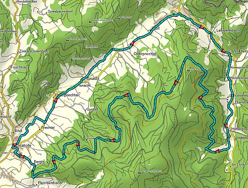
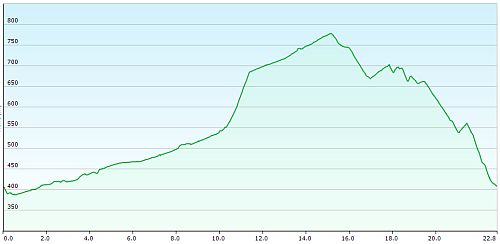
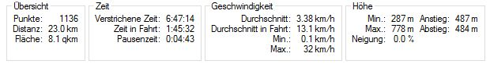

<div class="container">
  <div class="container-fluid">
    <h1>Mountain Bike</h1>
    <br>
    <div class="row">
      <div class="col-xs-12 col-md-6">
        <h2 class="featurette-heading">Rundweg nach Oberprechtal</h2>
        
        <br>
        
        <br>
        
      </div>
      <div class="col-xs-12 col-md-6">
        <p>
          Streckeninformationen<br>
          Strecke: 19 km<br>
          Höhenmeter: 681 m<br>
          Höchster Punkt: 1033 m<br>
          Tiefster Punkt: 367 m<br>
          Geeignet für: Mountainbike<br>
          Startpunkt: Elzach (Ladhof)<br>
          Einstiegspunkte: Prechtal (Tankstelle), Prechtal<br>
          Fahrzeit (geschätzt): 2 Std<br>
          Geeignet für Kinder: nein<br>
        </p>
        <p class="text-justify">
          <b>Strecken-Detailbeschreibung:</b>
          Wir starten in Elzach beim Ladhof und fahren in Richtung Reichenbach.
          Nach 3,5 km endet die asphaltierte Straße. Dort biegen wir scharf nach rechts.
          Wir fahren nun immer gerade aus (immer bergauf) in Richtung Lache.
          Nach einer guten Stunde (gut trainierte Radfahrer benötigen ca. 50 Minuten) erreichen wir die Rotkäppchenhütte.
          Wir halten uns direkt bei der Hütte etwas links in Richtung Gschasifelsen. Hier wird der Weg sehr unwegsam und es könnte gut sein, dass das Rad auf einer kurzen Passage geschoben werden muss.
          Wir kommen am Gschasifelsen vorbei und genießen bei gutem Wetter eine tolle Aussicht. VORSICHT!!! Falls Sie Kinder dabei haben!!! An dieser Stelle besteht höchste Absturzgefahr!!!
          Wir halten uns nach dem Gschasifelsen etwas rechts und erreichen nach ein paar hundert Meter wieder den Forstweg.
          Nur nach wenigen hundert Metern verlassen wir den Forstweg nach rechts in Richtung Kapf, wo wir nach weiteren einigen 100 Metern wieder auf einem Forstweg gelangen. Diesen Forstweg folgen wir nach links (Talwärts).
          Nun fahren wir stetig bergab in Richtung Prechtal. Wir müssen nun links auf die B294 einfahren und ein Stück auf der B294 fahren. Diese Straße ist viel befahren. Haben Sie Kinder dabei, dann bitte aufpassen.
          Ab der Aral-Tankstelle in Prechtal fahren wir den letzten Kilometer wieder auf dem Radweg zum Ausgangspunkt zurück.
        </p>
        <p>
          Einkehrmöglichkeiten<br>
          Auf dieser Strecke gibt es keine Einkehrmöglichkeiten! Also Vesper mitbringen und (muss normalerweise nicht extra erwähnt werden) den Müll nehmen wir wieder mit nach Hause.
        </p>
      </div>
    </div>
  </div>
</div>
